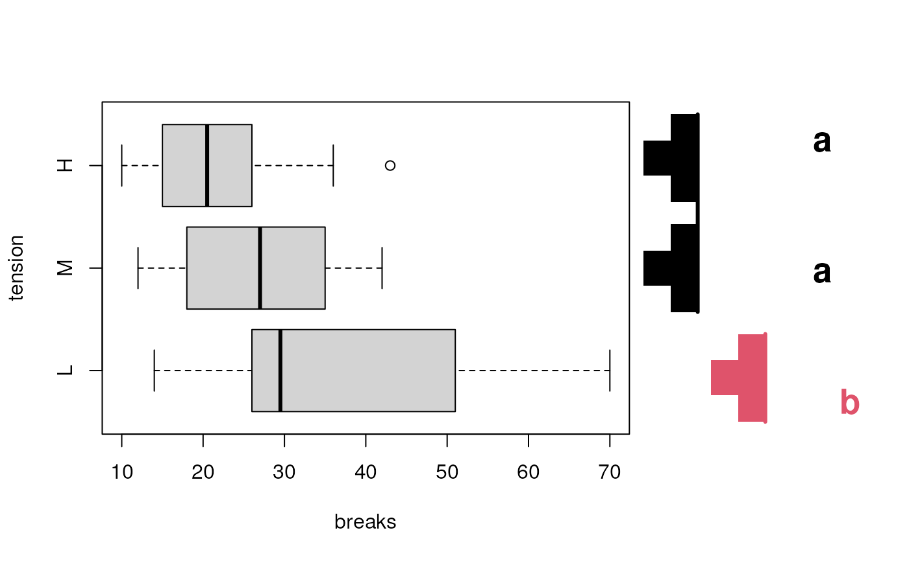
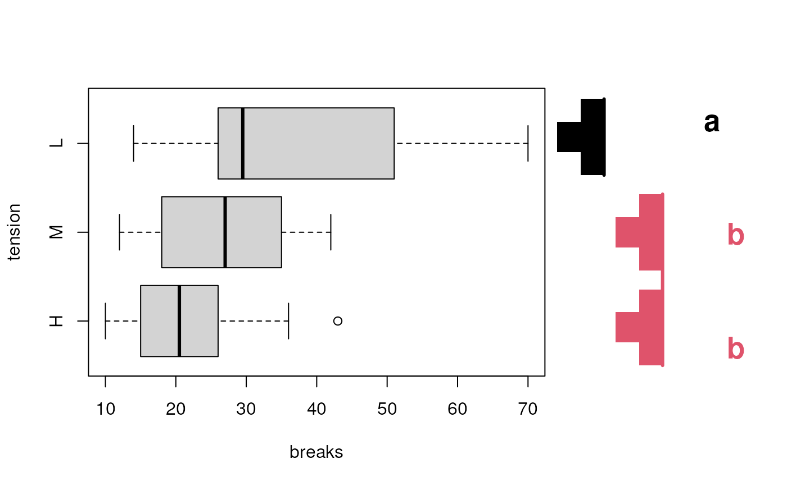
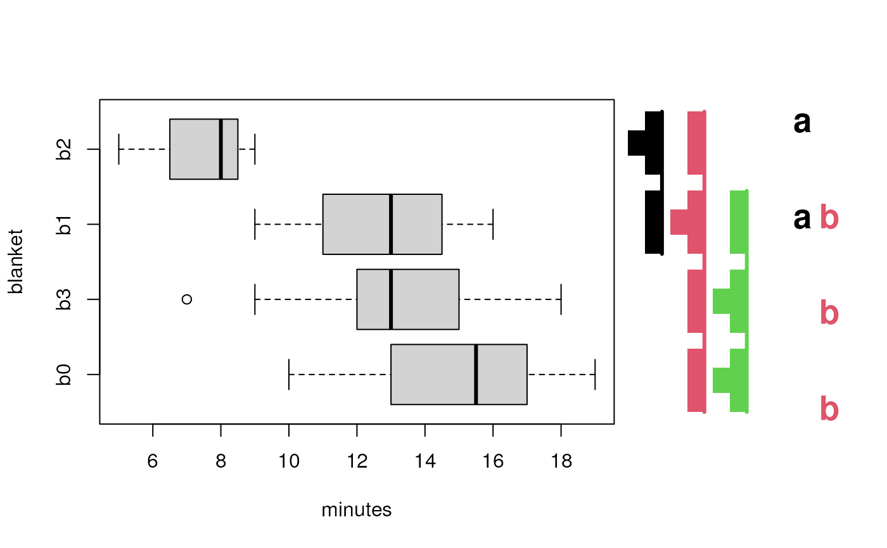
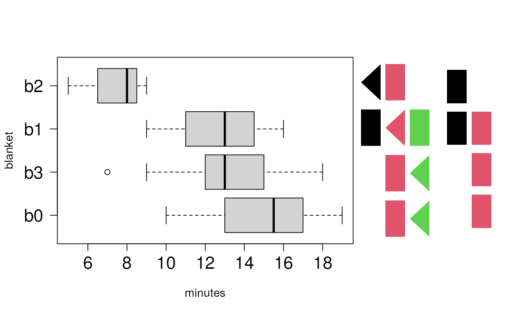
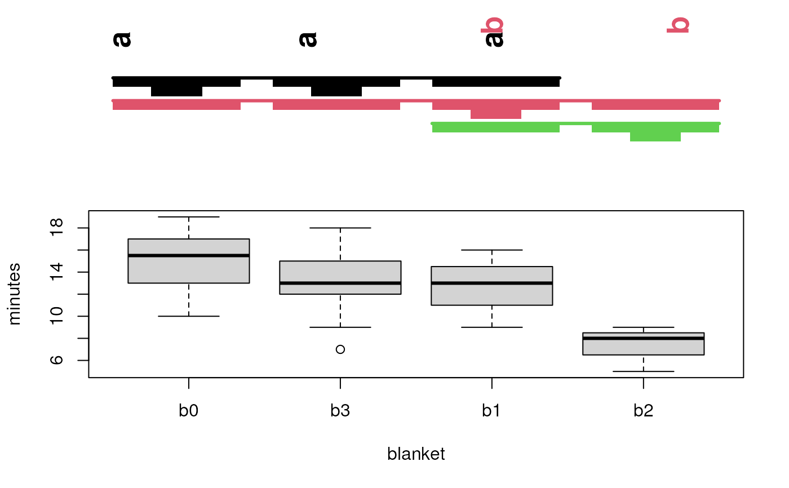
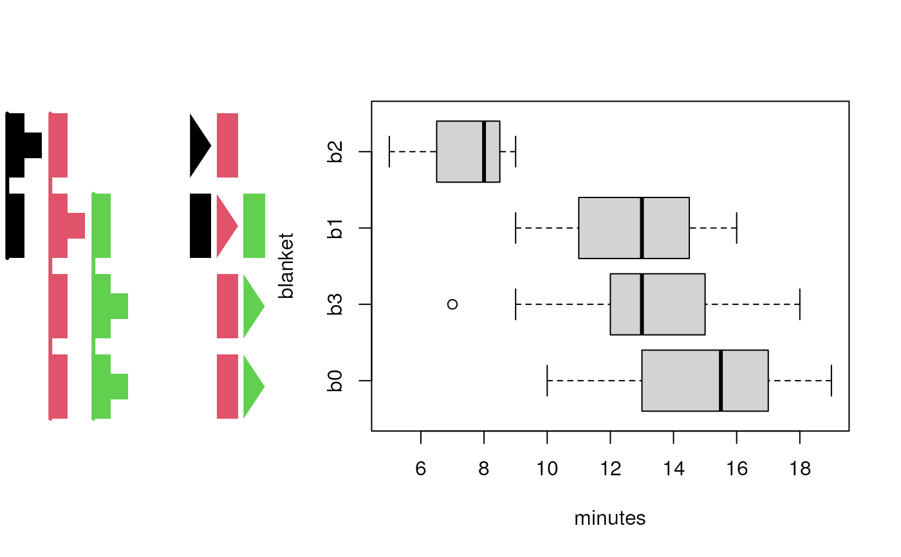
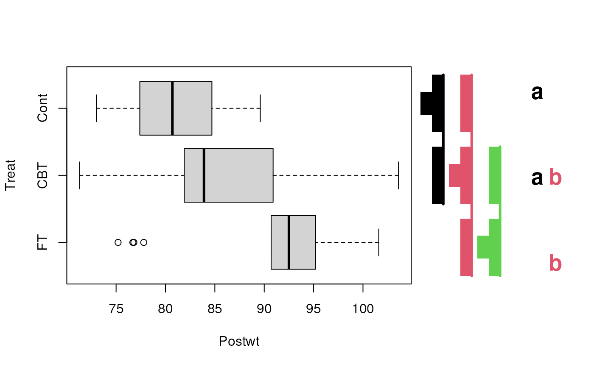

Create boxplots with multcompTs and / or multcompLetters
Usage
multcompBoxplot(
formula,
data,
horizontal = TRUE,
compFn = "TukeyHSD",
sortFn = "mean",
decreasing = TRUE,
plotList = list(boxplot = list(fig = c(0, 0.75, 0, 1)), multcompTs = list(fig = c(0.7,
0.85, 0, 1)), multcompLetters = list(fig = c(0.87, 0.97, 0.03, 0.98), fontsize = 20,
fontface = "bold"))
)Arguments
- formula
a two sided formula like "y~z", where both "y" and "z" are columns of the data.frame "data", "y" is numeric, and "z" is a factor. This will be passed as the first argument for both 'boxplot' and 'compFn', and so must work in both contexts. NOTE: Any more complicated formula may produce errors or unanticipated results.
- data
A data.frame for evaluating 'formula'.
- horizontal
TRUE for horizontal boxplots and vertical multcompTs and / or multcompLetters; FALSE for the opposite.
- compFn
a function whose output will serve as the the only non-default input to either 'multcompTs' or 'multcompLetters'. The default "TukeyHSD" actually translates to 'TukeyHSD(aov(formula, data))[[1]][, "p adj"]'.
- sortFn
If sortFn is a function or a character string naming a function, it is used to summarize the subset of y corresponding to each level of z into a single number, which will then be used to sort the levels of z according to the argument 'decreasing'. This step is skipped if sortFn is NULL or NA or if it is neither a function nor a character string that might name a function. If sortFn is a character string but a function by that name is not found in the search path, multcompBoxplot stops with, 'Error in do.call(sortFn, list(x = x)) : could not find function ...'.
- decreasing
If the levels of z are to be sorted using the output of 'sortFn', this is uses as the 'decreasing' in 'order' to sort the levels of z for plotting.
- plotList
A list with names in c("boxplot", "multcompTs", "multcompLetters"). Replicates are allowed. If present, they produce, e.g., multiple "multcompTs" side by side. This can be used to compare the visual effects of different arguments to "plot.multcompTs". Each component of 'plotList' is itself a list of arguments to pass to either "boxplot", "plot.multcompTs" or "plot.multcompLetters". Placement can be controlled via 'fig' arguments passed (indirectly) of the form 'c(x1, x2, y1, y2)'. If(horizontal==TRUE), fig gives the coordinates of the figure region in the display region of the plot device, as described on the
parhelp page; if(horizontal==FALSE), fig[c(3,4,1,2)] gives c(x1, x2, y1, y2) for placement of that portion of the plot.
Value
This function invisibly returns a list with one component for each component of plotList containing the output of the appropriate "plot.multcomp" call plus the output of "compFn".
Details
For formula = y~z, if 'sortFn' is a function or the name of a function, 'multcompBoxplot' starts by applying sortFn to the subsets of y corresponding to each level of z, and then sorting those summaries in increasing or decreasing order, per 'decreasing'. If 'sortFn' is NULL or NA, this sort step is skipped.
'multcompBoxplot' then creates 'boxplot' as specified in 'plotList'. Next,
'compFn' is called to generate comparisons to feed to the functions
(multcompTs and / or multcompLetters, whose
output is then passed to (plot.multcomp) for plotting.
Components of the relevant sublists of 'plotList' are made available to
par or (for plot.multcompLetters) to
gpar.
Examples
# Example from help("TukeyHSD")
multcompBoxplot(breaks~tension, data=warpbreaks)

# 'sortFn' can be either a function or a function name
# default order is 'decreasing=TRUE'
multcompBoxplot(breaks~tension, data=warpbreaks,
sortFn=median, decreasing=FALSE)

##################
library(multcomp)
#> Loading required package: mvtnorm
#> Loading required package: survival
#> Loading required package: TH.data
#> Loading required package: MASS
#>
#> Attaching package: ‘TH.data’
#> The following object is masked from ‘package:MASS’:
#>
#> geyser
data(recovery)
# Horizontal boxplots with both
# multcomp Ts and Letters on the right
# Using recovery{multcomp} data set
multcompBoxplot(minutes~blanket, recovery)

# Plotting boxes rather than letters and Ts
multcompBoxplot(minutes~blanket, recovery,
plotList=list(
boxplot=list(fig=c(0, 0.75, 0, 1), las=1,
cex.axis=1.5),
multcompTs=list(fig=c(0.7, 0.85, 0, 1),
type='boxes'),
multcompLetters=list(
fig=c(0.87, 0.97, 0.03, 0.98),
type='boxes') ) )

####################
# Vertical boxplots with both
# multcomp Ts and Letters on the top
multcompBoxplot(minutes~blanket, recovery,
horizontal=FALSE)

# Horizontal boxplots with 2 different
# displays of the "Ts" on the left
multcompBoxplot(minutes~blanket, recovery,
plotList=list(
boxplot=list(fig=c(0.3, 1, 0, 1)),
multcompTs=list(fig=c(0, 0.15, 0, 1),
orientation="reverse"),
multcompTs=list(fig=c(0.15, 0.3, 0, 1),
type="boxes", orientation="reverse",
mar=c(5,2, 4, 0)+.1) ) )

library(MASS)
anorx <-
multcompBoxplot(Postwt~Treat, data=anorexia)

if (FALSE) { # \dontrun{
# Confirm than sortFn=NULL or NA
# leaves the order unchanged
library(multcomp)
data(cholesterol)
cholesterol$trt3 <- with(cholesterol, factor(
as.character(trt), levels=levels(trt)[c(5:4,1:3)]))
multcompBoxplot(response ~ trt3, cholesterol,
sortFn=NULL)
multcompBoxplot(response ~ trt3, cholesterol,
sortFn=NA)
} # }